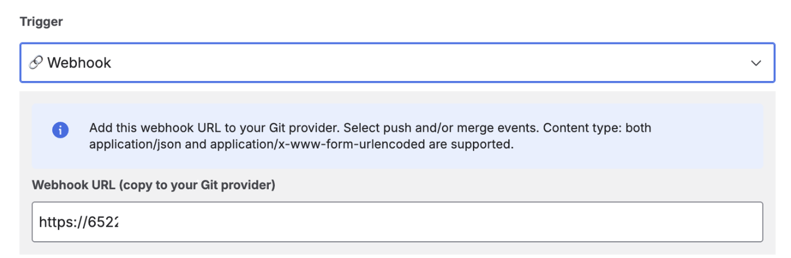
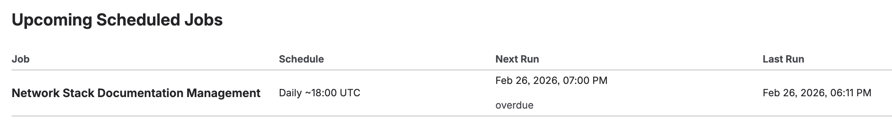
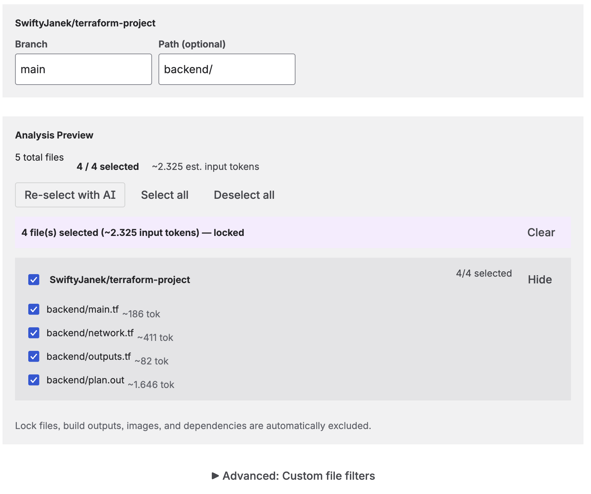
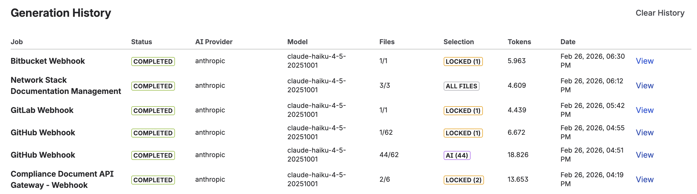

The documentation debt problem
Documentation debt accumulates quietly. A feature ships, the Confluence page gets a quick update, and everyone moves on. A month later the page is slightly wrong. Six months later it's describing a system that no longer exists. A year later it's actively misleading new engineers trying to onboard.
The problem isn't that engineers don't value documentation. Most do. The problem is that documentation is a task that sits outside the feedback loop of software delivery. It doesn't block the CI build. It doesn't cause a test to fail. It can be deferred indefinitely without anything breaking immediately.
The way to fix this is the same way teams fix other manual processes: automate it. Make documentation regeneration part of the delivery event — a consequence of merging code, not a separate task added to the backlog.
The documentation automation pipeline
CodeDoc AI for Confluence supports four trigger types. Together, they cover the full spectrum from exploratory manual runs to fully automated CI/CD-like pipelines:
Choosing the right trigger
The trigger you choose determines how frequently documentation regenerates — and therefore how much your AI token usage is. Here's a practical comparison:
| Trigger | Runs when | Best for | Plan |
|---|---|---|---|
| Manual | You click "Run" | Initial setup and testing, one-off generations | All plans |
| Scheduled | Daily, weekly, or monthly at a set time | Infrastructure, slow-changing systems, compliance docs | Subscription |
| On Merge | Pull/merge request merged to branch | Active development — docs track reviewed, stable code | Subscription |
| On Commit | Any push to the configured branch | High-value repos where maximum freshness matters most | Subscription |
Practical recommendation: Start with Manual to validate your configuration. Switch to Scheduled once the output quality is confirmed. Upgrade to On Merge when the team is ready for documentation to be part of the pull request flow.
Setting up webhook triggers
Webhook-based triggers (On Commit and On Merge) work by registering CodeDoc AI's Webhook URL in your Git provider. The app provides a single URL that works for all jobs and all providers — it identifies which job to run based on the incoming repository URL and branch.

The Webhook URL appears when you select On Commit or On Merge — copy it to your Git provider's webhook settings
Quick setup per provider:
- GitHub: Repository → Settings → Webhooks → Add webhook. Set Content-type to
application/json. Select "Just the push event" (On Commit) or "Pull requests" (On Merge). Full instructions at docs.github.com. - GitLab: Project → Settings → Webhooks. Check "Push events" (On Commit) or "Merge request events" (On Merge).
- Bitbucket: Repository → Repository settings → Webhooks. Trigger: "Repository Push" (On Commit) or "Pull Request Fulfilled" (On Merge).
- Azure DevOps: Project settings → Service hooks → Create subscription → Web Hooks. Event: "Code pushed" or "Pull request merged".
You only need to register the webhook once per repository — the same URL handles all jobs that reference that repository.
Scheduled documentation
Scheduled triggers run without any webhook configuration. Three schedule types are available:
- Daily — Select the earliest UTC hour. Runs within approximately one hour after the configured time.
- Weekly — Select the day of week and earliest UTC hour.
- Monthly — Select the day of month (1–28) and earliest UTC hour.
Scheduled triggers are the lowest-friction path to automation. No webhook, no Git provider configuration required. They work well for:
- Infrastructure repositories (Terraform, Kubernetes, CloudFormation) that change slowly but need current documentation for audits.
- Compliance documentation that needs to reflect the production state on a known schedule.
- Teams using monorepos where webhook events are too frequent to trigger a full documentation job on every push.

Upcoming scheduled jobs — next run time and countdown visible on the dashboard
AI file selection: keeping documentation relevant
One of the biggest variables in documentation quality and cost is which files you send to the AI. Sending everything in a repository — including test fixtures, generated files, migration scripts, and lock files — produces documentation that buries the important parts in noise, and it consumes more tokens than necessary.

File analysis preview — estimated token usage and AI-selected files before the job runs
CodeDoc AI offers several approaches to file selection:
- All files — Every code file in the repository. Use for small, well-structured repos.
- AI-selected (dynamic) — The AI re-selects the most relevant files on each run. Adapts as the codebase evolves.
- AI-selected (locked) — The AI picks once; you review and lock the list. Predictable token cost on subsequent runs.
- Manual selection — You choose which files to include from the analysis preview.
- Path filter — Restrict analysis to a subdirectory (e.g.
/srcor/backend). - Glob patterns — Include or exclude files using glob syntax. For example, exclude
**/*.test.tsto skip test files.
Token cost tip: AI-selected (dynamic) with a locked path filter is a good default for automated jobs. The AI continuously picks the most relevant files from your source directory, adapting to new modules without including test files or generated code.
The approval workflow as a quality gate
Fully automated documentation works well when you trust the output — which is reasonable for internal developer reference documentation that gets used and corrected over time. For documentation with a wider audience or higher stakes, you want a review step before anything goes live.
The approval workflow in CodeDoc AI inserts a human review step without breaking the automation. When enabled, the generated documentation is saved as a Confluence draft with a [DRAFT] prefix. The job still runs on schedule or webhook trigger — you just don't publish until you've reviewed it.
Practical split:
- No approval (fully automatic): Developer documentation, quick references, onboarding guides. High refresh rate, acceptable if occasionally imperfect.
- With approval: Customer documentation, compliance & audit pages, management overviews. Lower refresh rate, reviewed before going public.
You set this per job, not globally. A single Confluence space can have some fully-automated jobs and some approval-gated jobs running simultaneously.
Generation history and observability
Every documentation generation is logged in the Generation History view. Each entry shows:
- Timestamp of the run
- AI model used
- Number of files analyzed
- Token count consumed
- Status (success / draft pending approval / failed)
- Direct link to the resulting Confluence page

Generation History — activity charts (7 days, 4 weeks, 12 months) and individual run details
The history view also includes activity charts for 7 days, 4 weeks, and 12 months. This lets you monitor generation frequency, spot unexpected spikes (for example, a webhook misconfiguration that triggers the job on every push), and track cumulative token usage over time.
A complete automation example
Here is how a mid-sized engineering team might configure a complete documentation pipeline for their main application repository:
- Developer documentation job — Trigger: On Merge. Preset: Developer Documentation. File selection: AI-selected (dynamic), excluding
**/*.test.*. Approval: off. Target: Engineering Confluence space → "Service: [Repo Name]" page. - Management overview job — Trigger: Scheduled weekly (Monday 09:00 UTC). Preset: Management Overview. File selection: same as above. Approval: on. Target: Product Confluence space → "System Overview: [Repo Name]" page.
- Onboarding guide job — Trigger: Scheduled monthly. Preset: Onboarding Guide. File selection: path filter
/src. Approval: on. Target: Engineering Confluence space → "Onboarding: [Repo Name]" page.
One repository, three jobs, three Confluence pages serving three different audiences — all maintained automatically without anyone writing documentation manually.
Frequently asked questions
Can Confluence documentation be automated?
Yes. With CodeDoc AI for Confluence, documentation regenerates automatically on Git commits, PR merges, or a recurring schedule. The result is a native Confluence page that updates without manual intervention.
What is the difference between On Commit and On Merge triggers?
On Commit regenerates documentation on every push to the branch. On Merge regenerates only when a pull or merge request is merged. On Merge is more common for teams that want documentation to reflect reviewed, stable code rather than every WIP commit.
How do I set up automatic Confluence documentation from GitHub?
Install CodeDoc AI, connect your GitHub token and AI provider key, add your repository, create a job with On Commit or On Merge as the trigger, and register the provided webhook URL in your GitHub repository settings. Full step-by-step instructions in this article.
How do I prevent low-quality documentation from being published automatically?
Enable "Require approval before publishing" on the job. Documentation is saved as a draft with a [DRAFT] prefix and only published after you review and approve it from the Dashboard.
Does Confluence documentation automation work with GitLab, Bitbucket, and Azure DevOps?
Yes. The same single webhook URL works for all four providers. Scheduled triggers work independently of the Git provider entirely.
Will documentation generation create duplicate Confluence pages?
No. The job updates the existing page on each run. If the page doesn't exist yet, it creates it. Subsequent runs update it in place — no duplicates.
Turn your next merge into a documentation update
CodeDoc AI is free to try — all triggers, AI file selection, and the approval workflow included from day one.
Try it free on Marketplace →